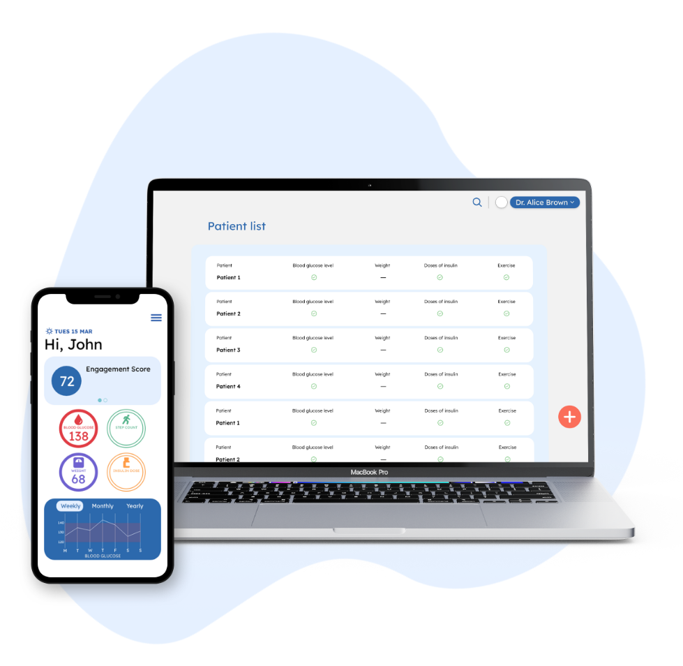

About DexTrack
Redefining how diabetes care is measured and delivered.
At DexTrack, we enable the management of your diabetes in the convenience of your own home and help replace manual, inefficient processes with digitally-enabled care pathways.

Our Products

We help healthcare organisations digitally transform their care delivery by replacing manual, costly processes with automated and streamlined digital care pathways. Digital care pathways monitor, support and engage patients along their entire care journey, improving convenience and health outcomes while reducing waste and administritative burden.
Meet the Team
At DexTrack, we've got a well seasoned team at the helm.
-

Aaron
Johannes
Front-end Designer
-
Khadiza
Refry
Front-end Designer
-
Leoni
Angela
Back-end Developer
-

Nadya
Aureilia
Back-end Developer
-
Vincent
Kurniawan
Back-end Developer